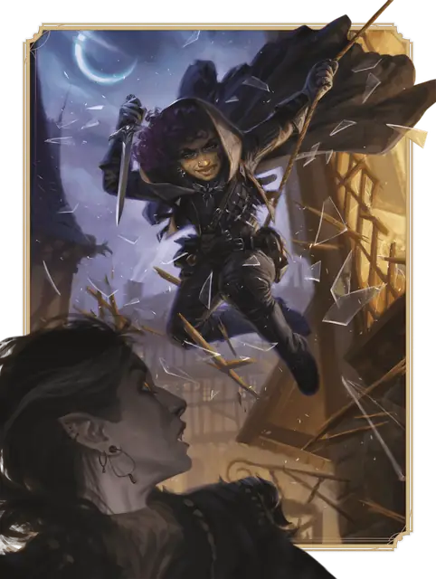

Плут
Rogue

Основная характеристика Ловкость
Кость хитов К8 за уровень Плута
Хиты за уровень 1к8 (или 5) + ваш модификатор Телосложения (суммарно минимум 1)
Владение спасбросками Ловкость и Интеллект
Владение навыками Выберите четыре: Акробатика, Атлетика, Восприятие, Запугивание, Ловкость рук, Обман, Проницательность, Расследование, Скрытность, Убеждение
Владение оружием Простое оружие; Воинское оружие, обладающее свойством Фехтовальное или Лёгкое
Владение инструментами Воровские инструменты
Тренированность с доспехами Лёгкие доспехи
Начальное снаряжение Выберите А или Б:
(А) Кожаный доспех, 2 Кинжала, Короткий меч, Короткий лук, 20 Стрел, Колчан, Воровские инструменты, Набор взломщика и 8 ЗМ;
или (Б) 100 ЗМ
| Уровень | Бонус владения | Классовые умения | Коварная атака |
|---|---|---|---|
| 1 | +2 | Коварная атака, Оружейное мастерство, Воровской жаргон, Экспертность | 1к6 |
| 2 | +2 | Хитрое действие | 1к6 |
| 3 | +2 | Подкласс Плута, Точное прицеливание | 2к6 |
| 4 | +2 | Увеличение характеристик | 2к6 |
| 5 | +3 | Хитрый удар, Невероятное уклонение | 3к6 |
| 6 | +3 | Экспертность | 3к6 |
| 7 | +3 | Увёртливость, Надежный талант | 4к6 |
| 8 | +3 | Увеличение характеристик | 4к6 |
| 9 | +4 | Умение подкласса | 5к6 |
| 10 | +4 | Увеличение характеристик | 5к6 |
| 11 | +4 | Улучшенный Хитрый удар | 6к6 |
| 12 | +4 | Увеличение характеристик | 6к6 |
| 13 | +5 | Умение подкласса | 7к6 |
| 14 | +5 | Бесчестные удары | 7к6 |
| 15 | +5 | Скользкий ум | 8к6 |
| 16 | +5 | Увеличение характеристик | 8к6 |
| 17 | +6 | Умение подкласса | 9к6 |
| 18 | +6 | Неуловимость | 9к6 |
| 19 | +6 | Эпический дар | 10к6 |
| 20 | +6 | Улыбка фортуны | 10к6 |
как персонаж 1-го уровня
Получите все атрибуты из таблицы «Ключевые атрибуты Плута».
Получите умения Плута 1-го уровня; они перечислены в таблице «Умения Плута».
как мультиклассовый персонаж
Получите следующие атрибуты из таблицы «Ключевые атрибуты Плута»: Кость хитов, владение одним навыком на выбор из списка навыков Плута, владение Воровскими инструментами и тренированность с Лёгкими доспехами.
Получите умения Плута 1-го уровня; они перечислены в таблице «Умения Плута».
Уровень 1: Коварная атака
Вы знаете, как точно нанести удар и как извлечь выгоду из того, что ваш враг на что-то отвлёкся. Один раз за ход вы можете нанести 1к6 дополнительного урона одному существу, по которому вы попали броском атаки, совершённым с Преимуществом и с использованием Дальнобойного или Фехтовального оружия. Тип дополнительного урона — тот же, что и тип урона вашего оружия. Если в пределах 5 футов от цели находится ваш союзник, у которого нет состояния Недееспособный, вы можете применить это умение даже если совершали бросок атаки без Преимущества, но только если этот бросок совершался без Помехи. Дополнительный урон увеличивается, когда вы получаете уровни Плута, как показано в столбце «Коварная атака» таблицы «Умения Плута».
Уровень 1: Оружейное мастерство
Ваши тренировки с оружием позволяют вам использовать свойства мастерства двух видов оружия — например, Кинжала и Короткого лука. Вы выбираете виды оружия из тех, которыми владеете. Каждый раз, когда вы завершаете Долгий отдых, вы можете изменить выбранные вами виды оружия. Например, вы могли бы переключиться на использование свойств мастерства Скимитара и Короткого меча.
Уровень 1: Воровской жаргон
Вы изучали различные языки в сообществах, где вы практиковали свои плутовские таланты. Вы знаете Воровской жаргон и ещё один язык на ваш выбор из таблиц языков.
Уровень 1: Экспертность
Вы получаете Экспертность в двух из тех навыков, которыми вы владеете, на ваш выбор. Если вы ими владеете, рекомендуются Ловкость рук и Скрытность.
Уровень 2: Хитрое действие
Ваша сообразительность и ловкость позволяют вам двигаться и действовать быстро. В ваш ход вы можете Бонусным действием совершить одно из следующих действий: Рывок, Отход или Затаивание.
Уровень 3: Подкласс Плута
Вы получаете подкласс Плута на ваш выбор. Подкласс — это специализация, которая даёт вам умения на определённых уровнях Плута. Вы всегда получаете все умения подкласса, уровень которых не больше вашего уровня Плута.
Уровень 3: Точное прицеливание
Бонусным действием вы получаете Преимущество на следующий бросок атаки в текущем ходу. Вы можете использовать это умение только если не перемещались в этом ходу, и после его использования ваша Скорость станет равна 0 до конца текущего хода.
Уровень 4: Увеличение характеристик
Вы получаете черту Увеличение характеристик или другую черту на ваш выбор, требованиям которой вы соответствуете.
Уровень 5: Хитрый удар
Вы придумали особо хитрые способы использовать вашу Коварную атаку. Когда вы наносите урон вашей Коварной атакой, можете добавить один из следующих эффектов Хитрого удара. У каждого варианта Хитрого удара есть стоимость: чтобы добавить эффект, вы тратите определённое количество костей из урона Коварной атаки. Эти кости тратятся перед броском урона, а эффект наступает сразу после нанесения урона атаки. Например, если вы добавляете эффект Отравление, перед броском урона Коварной атаки уберите из костей 1к6.Если эффект Хитрого удара требует спасброска, его Сл равна 8 + ваши модификатор Ловкости и Бонус владения.
Отравление (стоимость: 1к6). Вы добавляете к удару токсин, и цель атаки должна совершить спасбросок Телосложения. При провале она получает состояние Отравленный на 1 минуту. Отравленная таким образом цель может повторять спасбросок в конце каждого своего хода, при успехе оканчивая на себе этот эффект. Чтобы использовать этот эффект, вы должны иметь при себе Инструменты отравителя.
Подсечка (стоимость: 1к6). Если цель Большого размера или меньше, она должна преуспеть в спасброске Ловкости, иначе получит состояние Опрокинутый.
Отступление (стоимость: 1к6). Сразу после атаки вы перемещаетесь на расстояние вплоть до половины вашей Скорости, не вызывая Провоцированных атак.
Уровень 5: Невероятное уклонение
Когда видимое вами существо попадает по вам броском атаки, вы можете Реакцией уменьшить наносимый вам этой атакой урон вдвое (округляя вниз).
Уровень 6: Экспертность
Вы получаете Экспертность ещё в двух из тех навыков, которыми вы владеете, на ваш выбор.
Уровень 7: Увёртливость
Вы можете ловко увернуться от определённых опасностей. Если вы попадаете под действие эффекта, который позволяет вам совершить спасбросок Ловкости, чтобы получить только половину урона, вместо этого вы не получаете вовсе никакого урона если преуспеваете в спасброске, и только половину если проваливаете его. Вы не можете использовать это умение, если у вас есть состояние Недееспособный.
Уровень 7: Надежный талант
Каждый раз, когда вы совершаете проверку характеристики для навыка или инструмента, которым вы владеете, можете при выпадении на кости к20 результатов от «1» до «9» считать, что выпало «10».
Уровень 8: Увеличение характеристик
Вы получаете черту Увеличение характеристик или другую черту на ваш выбор, требованиям которой вы соответствуете.
Уровень 9: Умение подкласса
Вы получаете все умения подкласса Плута 9-го уровня.
Уровень 10: Увеличение характеристик
Вы получаете черту Увеличение характеристик или другую черту на ваш выбор, требованиям которой вы соответствуете.
Уровень 11: Улучшенный Хитрый удар
Вы можете использовать до двух эффектов Хитрого удара, когда наносите урон Коварной атакой, затрачивая указанную стоимость за каждый эффект.
Уровень 12: Увеличение характеристик
Вы получаете черту Увеличение характеристик или другую черту на ваш выбор, требованиям которой вы соответствуете.
Уровень 13: Умение подкласса
Вы получаете все умения подкласса Плута 13-го уровня.
Уровень 14: Бесчестные удары
Вы отработали новые способы бесчестного использования Коварной атаки. Вы изучаете следующие варианты эффектов Хитрого удара.
Шок (стоимость: 2к6). Цель должна преуспеть в спасброске Телосложения, иначе в свой следующий ход она сможет или только переместиться, или только совершить одно действие, или только совершить Бонусное действие.
Нокаут (стоимость: 6к6). Цель должна преуспеть в спасброске Телосложения, иначе получит состояние Бессознательный на 1 минуту или пока не получит урон. Цель с этим состоянием может повторять этот спасбросок в конце каждого своего хода, при успехе оканчивая на себе этот эффект.
Ослепление (стоимость: 3к6). Цель должна преуспеть в спасброске Ловкости, иначе получит состояние Ослеплённый до конца своего следующего хода.
Уровень 15: Скользкий ум
Ваш хитрый ум исключительно трудно контролировать извне. Вы получаете владение спасбросками Мудрости и Харизмы.
Уровень 16: Увеличение характеристик
Вы получаете черту Увеличение характеристик или другую черту на ваш выбор, требованиям которой вы соответствуете.
Уровень 17: Умение подкласса
Вы получаете все умения подкласса Плута 17-го уровня.
Уровень 18: Неуловимость
Вы можете уклоняться так хорошо, что противник крайне редко может взять над вами верх. Броски атаки по вам не могут совершаться с Преимуществом, если у вас нет состояния Недееспособный.
Уровень 19: Эпический дар
Вы получаете черту из категории Эпических даров или другую черту по вашему выбору, требованиям которой вы соответствуете. Рекомендуется Дар ночного духа.
Уровень 20: Улыбка фортуны
Вы получаете сверхъестественную способность преуспевать, когда это нужнее всего. При провале Теста к20 вы можете изменить результат броска кости на «20». Как только вы использовали это умение, вы не можете сделать это вновь, пока не завершите Короткий или Долгий отдых.
Подклассы
Вор
Охотьтесь за сокровищами как сущий искатель приключений
Смесь взломщика, охотника за сокровищами и исследователя, вы олицетворяете архетип искателя приключений. Вы узнаете, как улучшить свою подвижность и скрытность, а также навыки, которые пригодятся при проникновении в древние руины и получении максимальной пользы от найденных там магических предметов.
Уровень 3: Быстрые руки
Бонусным действием вы можете выполнить одно из следующего:
Ловкость рук. Совершите проверку Ловкости (Ловкость рук), чтобы вскрыть замок, обезвредить ловушку с помощью Воровских инструментов, или выкрасть что-то из чужого кармана.
Использование объекта. Совершите действие Использование, или действием Магия используйте магический предмет, для которого необходимо это действие.
Уровень 3: Взлом с проникновением
Вы научились проникать в особо труднодоступные места, что даёт вам следующие преимущества.
Верхолаз. Вы получаете Скорость лазания, равную вашей Скорости.
Прыгун. При определении дистанции ваших прыжков вы можете использовать Ловкость, а не Силу.
Уровень 9: Совершенная скрытность
Вы получаете следующий вариант Хитрого удара.
Скрытная атака (стоимость: 1к6). Если у вас есть состояние Невидимый благодаря действию Затаивание, этот Хитрый удар не заканчивает состояние Невидимый на вас, если вы закончите этот ход за Укрытием на три четверти или Полным укрытием.
Уровень 13: Использование магических предметов
Вы узнали, как максимально эффективно использовать магические предметы, что даёт вам следующие преимущества.
Настройка. Вы можете одновременно настроиться на четыре предмета.
Заряды. Каждый раз, когда вы используете свойство магического предмета, которое тратит заряды, бросьте 1к6. Если выпало «6», вы не затрачиваете заряд на это использования свойства.
Свитки. Вы можете использовать любые Свитки заклинания, и вашей заклинательной характеристикой для сотворения заклинаний со свитков является Интеллект. Если записанное на свитке заклинание — заговор или заклинание 1-го уровня, вы можете сотворить его без проверок. Если свиток содержит заклинание более высокого уровня, сначала вы должны преуспеть в проверке Интеллекта (Тайная магия) Сл 10 + уровень заклинания. При успехе вы сотворяете заклинание со свитка; при провале свиток распадается.
Уровень 17: Воровские рефлексы
Вы искусны в засадах и быстром отступлении при опасности. В первом раунде каждого боя вы можете совершить два хода. Первый ход вы совершаете согласно своей нормальной Инициативе, а второй ход — с Инициативой на 10 меньше.
Клинок душ
Поражайте врагов псионическими клинками
Клинок душ наносит удары при помощи своего разума, прорезая как физические, так и психические барьеры. Эти Плуты обнаруживают в себе псионическую силу и используют её в своих плутовских делах. Ваши псионические способности могли преследовать вас с самого детства, но полностью проявить себя после пережитого в приключениях стресса. Или же вы обнаружили уединённый орден адептов псионики и потратили годы, изучая способы пробуждения вашей силы.
Уровень 3: Псионическая сила
В вас скрыт источник псионической энергии. Он представлен вашими Костями пси-энергии; эти кости используются силами, что даёт вам этот подкласс. Таблица "Кости пси-энергии Клинка душ" показывает, сколько костей какого типа у вас есть по достижению определённых уровней Плута.
Кости пси-энергии Клинка душ
| Уровень Плута | Кость | Количество |
| 3 | 1к6 | 4 |
| 5 | 1к8 | 6 |
| 9 | 1к8 | 8 |
| 11 | 1к10 | 8 |
| 13 | 1к10 | 10 |
| 17 | 1к12 | 12 |
Все умения этого подкласса, использующие Кости пси-энергии, используют только кости этого подкласса. Некоторые из ваших способностей тратят Кость пси-энергии, как указано в описании способности; вы не можете использовать способность, требующую потратить такую кость, если все ваши кости потрачены.
Вы восстанавливаете одну потраченную Кость пси-энергии, когда завершаете Короткий отдых, и вы восстанавливаете все Кости пси-энергии, когда завершаете Долгий отдых.
Усиленная псионикой сноровка. Если вы проваливаете проверку характеристики для навыка или инструмента, которым вы владеете, вы можете бросить одну Кость пси-энергии и добавить выпавшее число к проверке, что может изменить результат на успех. Вы тратите эту кость только если эта проверка характеристики стала успешной.
Психический шёпот. Вы можете установить телепатическую связь с другими. Действием Магия вы выбираете видимых вами существ, количеством не больше вашего Бонуса владения, а затем бросаете одну Кость пси-энергии. Выбранные существа могут телепатически разговаривать с вами, а вы с ними, в течение нескольких часов; количество часов равно выпавшему на кости числу. Чтобы послать сообщение или получить его (действий не требуется), вы и другое существо должны находиться на расстоянии не более 1 мили друг от друга. Существо может прервать эту телепатическую связь в любой момент (действий не требуется).
Вы не тратите Кость пси-энергии, когда используете эту силу впервые после завершения Долгого отдыха. В остальных случаях при использовании этой силы Кость тратится.
Уровень 3: Психические клинки
Вы можете проявлять мерцающие клинки психической энергии. Каждый раз, когда вы совершаете действие Атака или совершаете Провоцированную атаку, вы можете проявить в свободной руке Психический клинок и атаковать им. Этот магический клинок обладает следующими особенностями:
Категория оружия. Простое Рукопашное
Урон при попадании. 1к6 + модификатор используемой для броска атаки характеристики Психического урона
Свойства. Фехтовальное, Метательное (Дистанция 60/120 футов)
Свойство мастерства. Отвлекающее (вы можете использовать это свойство, и оно не учитывается при подсчёте количества используемых свойств Оружейного мастерства)
Клинок исчезает немедленно после попадания или промаха по цели, а если наносит урон, то не оставляет на цели следов.
После того, как вы атакуете этим клинком в ваш ход, Бонусным действием в тот же ход вы можете совершить рукопашную или дальнобойную атаку вторым Психическим клинком при условии, что у вас свободна другая рука для его проявления. Кость урона этой бонусной атаки — 1к4, а не 1к6.
Уровень 9: Клинки души
Теперь вы можете использовать следующие силы своих Психических клинков.
Самонаводящиеся удары. Если вы промахиваетесь по цели броском атаки с Психическим клинком, можете бросить одну Кость пси-энергии и добавить выпавшее число к броску атаки, что может изменить результат на попадание. Вы тратите эту кость только если эта атака стала успешной.
Психическая телепортация. Бонусным действием вы проявляете Психический клинок и бросаете одну Кость пси-энергии, тратя её; затем вы мечете клинок в видимое вами незанятое пространство, расстояние до которого в футах не превышает 10-кратный результат броска этой кости. После этого вы телепортируетесь в это пространство, а клинок исчезает.
Уровень 13: Психическая завеса
Вы можете соткать завесу психической энергии, которая укроет вас. Действием Магия вы получаете состояние Невидимый на 1 час или пока не отмените этот эффект (действий не требуется). Эта невидимость заканчивается досрочно сразу после того, как вы наносите существу урон или заставляете существо совершить спасбросок.
Как только вы используете это умение, вы не сможете сделать это снова, пока не завершите Долгий отдых; вы можете потратить одну Кость пси-энергии, чтобы восстановить его использование (действий не требуется).
Уровень 17: Раздирание разума
Вы можете прорезать своими Психическими клинками разум существа. Когда вы атакуете Психическим клинком и наносите существу урон Коварной атакой, вы можете заставить эту цель совершить спасбросок Мудрости (Сл 8 + ваши модификатор Ловкости и Бонус владения). При провале цель получает состояние Ошеломлённый на 1 минуту. Ошеломлённое таким образом существо может повторять этот спасбросок в конце каждого своего хода, оканчивая на себе эффект при успехе.
Как только вы используете это умение, вы не сможете сделать это снова, пока не завершите Долгий отдых; вы можете потратить три Кости пси-энергии, чтобы восстановить его использование (действий не требуется).
Мистический ловкач
Усиливайте скрытность с помощью магии
Некоторые Плуты усиливают свои прекрасно отточенные навыки скрытности и ловкости магией, обучаясь трюкам, способным помочь в плутовском ремесле. Некоторые Мистические ловкачи используют свои таланты для карманных краж и взломов, а другие — для розыгрышей.
Уровень 3: Сотворение заклинаний
Вы научились сотворять заклинания. Правила сотворения заклинаний смотрите в соответствующей статье. Следующая информация описывает, как вы используете эти правила с Мистическим ловкачом.
Заговоры. Вы знаете три заговора: Волшебная рука и два других заговора на ваш выбор из списка заклинаний Волшебника. Рекомендуются Расщепление разума и Малая иллюзия.
Каждый раз, когда вы получаете уровень Плута, вы можете заменить один из ваших заговоров (за исключением Волшебной руки) другим заговором Волшебника на ваш выбор.
Когда вы достигнете 10-го уровня Плута, вы изучите ещё один заговор из списка заклинаний Волшебника на ваш выбор.
Ячейки заклинаний. В следующей таблице указано, сколько у вас есть ячеек заклинаний для сотворения заклинаний 1-го уровня и выше. Вы восстанавливаете все потраченные ячейки, когда завершаете Долгий отдых.
| Уровень Плута | Подготовленные заклинания | Ячейки 1-го уровня | Ячейки 2-го уровня | Ячейки 3-го уровня | Ячейки 4-го уровня |
| 3 | 3 | 2 | - | - | - |
| 4 | 4 | 3 | - | - | - |
| 5 | 4 | 3 | - | - | - |
| 6 | 4 | 3 | - | - | - |
| 7 | 5 | 4 | 2 | - | - |
| 8 | 6 | 4 | 2 | - | - |
| 9 | 6 | 4 | 2 | - | - |
| 10 | 7 | 4 | 3 | - | - |
| 11 | 8 | 4 | 3 | - | - |
| 12 | 8 | 4 | 3 | - | - |
| 13 | 9 | 4 | 3 | 2 | - |
| 14 | 10 | 4 | 3 | 2 | - |
| 15 | 10 | 4 | 3 | 2 | - |
| 16 | 11 | 4 | 3 | 3 | - |
| 17 | 11 | 4 | 3 | 3 | - |
| 18 | 11 | 4 | 3 | 3 | - |
| 19 | 12 | 4 | 3 | 3 | 1 |
| 20 | 13 | 4 | 3 | 3 | 1 |
Подготовленные заклинания 1-го уровня и выше. Вы подготавливаете список заклинаний 1-го уровня и выше, которые вы можете сотворять с помощью этого умения. Для начала выберите три заклинания 1-го уровня из списка заклинаний Волшебника. Рекомендуются Маскировка, Очарование личности и Туманное облако.
Количество заклинаний в вашем списке увеличивается по мере получения уровней Плута, как указано в столбце «Подготовленные заклинания» таблицы заклинаний Мистического ловкача.
Когда это число увеличивается, выбирайте дополнительные заклинания Волшебника до тех пор, пока их количество не сравняется с числом, указанным в этой таблице. Выбираемое заклинание может быть только такого уровня, для которого у вас есть ячейка заклинаний. Например, если вы Плут 7-го уровня, ваш список подготовленных заклинаний может включать пять заклинаний 1-го или 2-го уровня в любой комбинации.
Замена подготовленных заклинаний. Каждый раз, когда вы получаете уровень Плута, вы можете заменить одно заклинание из своего списка другим заклинанием Волшебника, для которого у вас есть ячейка заклинаний.
Заклинательная характеристика. Заклинательной характеристикой для ваших заклинаний Волшебника является Интеллект.
Заклинательная фокусировка. Вы можете использовать Магическую фокусировку в качестве Заклинательной фокусировки для ваших заклинаний Волшебника.
Уровень 3: Ловкость волшебной руки
Вы можете сотворять Волшебную руку Бонусным действием, и при сотворении вы можете сделать её Невидимой. Вы можете управлять сотворённой рукой Бонусным действием, и вы можете совершать ей проверки Ловкости (Ловкость рук).
Уровень 9: Магическая засада
Когда вы сотворяете заклинание на существо, оно совершает с Помехой спасброски от этого заклинания в этом ходу, если при сотворении заклинания у вас есть состояние Невидимый.
Уровень 13: Многогранный ловкач
Вы получаете возможность отвлекать цель вашей Волшебной рукой. Когда вы используете на существо эффект Подсечка вашего Хитрого удара, вы также можете использовать этот эффект на другое существо в пределах 5 футов от вашей Волшебной руки.
Уровень 17: Вор заклинаний
Вы получаете способность магически воровать у другого заклинателя знания о том, как творить заклинание.
Немедленно после того, как существо сотворит заклинание, нацеленное на вас или в область воздействия которого вы попали, вы можете Реакцией заставить это существо совершить спасбросок Интеллекта. Сл равна вашей Сл спасброска заклинаний. При провале это заклинание не воздействует на вас, и вы крадёте знание об этом заклинании, если оно 1-го уровня или выше, и при этом такого уровня, который вы можете сотворять (заклинание необязательно должно быть заклинанием Волшебника). В течение следующих 8 часов у вас подготовлено это заклинание; существо, у которого вы украли заклинание, не может сотворять его в течение этих 8 часов.
Как только вы украли заклинание с помощью этого умения, вы не можете сделать это вновь, пока не завершите Долгий отдых.
Убийца
Упражняйтесь в мрачном искусстве смерти
Обучение Убийцы сосредоточено на использовании скрытности, ядов и маскировки, что позволяет устранять врагов с убийственной эффективностью. Хотя некоторые Плуты, следующие этому пути, являются наёмными убийцами, шпионами или охотниками за головами, возможности этого подкласса также полезны и для искателей приключений, сталкивающихся с чудовищными врагами.
Уровень 3: Ликвидация
Вы искусны в засадах, что даёт вам следующие преимущества.
Инициатива. Вы совершаете с Преимуществом броски Инициативы.
Внезапные атаки. В первом раунде каждого боя вы совершаете с Преимуществом броски атаки против любого существа, которое ещё не совершало ход в этом бою. Если во время первого раунда ваша Коварная атака наносит урон цели, эта цель получает дополнительный урон того же типа, что у вашего оружия, равный вашему уровню Плута.
Уровень 3: Инструменты убийцы
Вы получаете Набор для грима и Инструменты отравителя, и вы теперь владеете ими.
Уровень 9: Мастер проникновения
Вы стали экспертом в следующих техниках, помогающих вашим проникновениям в тыл врага.
Мастерское подражание. Вы можете безошибочно подражать чужой речи, почерку или и тому, и другому, если потратили не менее 1 часа на их изучение.
Прицеливание на ходу. При использовании Точного прицеливания ваша Скорость не снижается до 0.
Уровень 13: Покрытое ядом оружие
Когда вы используете эффект Отравление вашего Хитрого удара, цель также получает 2к6 урона Ядом каждый раз, когда она проваливает спасбросок против этого эффекта. Этот урон игнорирует Сопротивление урону Ядом.
Уровень 17: Смертельный удар
Когда вы попадаете Коварной атакой в первом раунде боя, ваша цель должна преуспеть в спасброске Телосложения (Сл 8 + ваши модификатор Ловкости и Бонус владения), иначе урон всей атаки будет удвоен.
Наследник троицы
Станьте ужасающим воплощением злобы
Наследник троицы получает силы от злых божеств, совместно известных во Вратах Балдура как Мёртвая троица: Баал, бог жестокости и убийства; Бэйн, бог тирании и страха; и Миркул, бог смерти. Часть Плутов встаёт на этот путь, добровольно и страстно посвящая себя этим жутким божествам, но некоторые получают эти силы как проклятие. Как бы ни были получены силы Троицы, они проявляют себя как оккультные дары и необычайные таланты к нанесению урона и ужаса.
Наследника троицы чаще всего можно встретить во Вратах Балдура, том самом городе, где Мёртвая троица жила смертными магами до вознесения к божественности. Подпольные культы Баала, Бэйна и Миркула зачастую оценивают Наследников троицы как самых ценных своих членов. За пределами Врат Балдура и нерелигиозные воровские гильдии — как Теневые воры в Амне или Гильдия Занатара в Вотердипе — могут призвать Наследника троицы для выполнения особо жестокой задачи.
Уровень 3: Кровожадность
Когда видимый вами в пределах 30 футов от вас враг получает урон, и после этого он Окровавлен, но не убит мгновенно, вы можете Реакцией телепортироваться в видимое вами в пределах 5 футов от этого врага незанятое пространство. После телепортации вы можете совершить одну рукопашную атаку.
Вы можете использовать это умение количество раз, равное вашему модификатору Интеллекта (минимум 1 раз), и вы восстанавливаете все потраченные использования, когда завершаете Долгий отдых.
Уровень 3: Ужасная преданность
Выберите одного из Троицы: Баала, Бэйна или Миркула. Вы получаете Сопротивление одному типу урона и способность сотворять один заговор, как указано в следующей таблице. Ваша заклинательная характеристика для этого заговора — Интеллект. Когда вы завершаете Долгий отдых, можете изменить выбор божества.
| Божество | Сопротивление | Заговор |
| Баал | урон Ядом | Защита от оружия |
| Бэйн | Психический урон | Малая иллюзия |
| Миркул | Некротический урон | Леденящее прикосновение |
Уровень 9: Удар страха
Вы получаете следующий вариант Хитрого удара.
Удар страха (стоимость: 1к6). Цель должна преуспеть в спасброске Мудрости, иначе получит состояние Испуганный на 1 минуту. Пока цель Испугана таким образом, вы совершаете с Преимуществом броски атаки по ней.
Испуганная цель повторяет спасбросок в конце каждого своего хода, при успехе оканчивая на себе этот эффект.
Уровень 13: Аура злобы
Вы источаете злобную силу одного из Троицы. Когда вы используете Кровожадность и телепортируетесь, выберите существ в пределах 10 футов от пространства, откуда вы телепортировались или куда вы телепортировались (на ваш выбор). Каждое выбранное существо получает урон, равный вашему модификатору Интеллекта; тип этого урона — тот же, что и выбранный вами для умения Ужасная преданность, и этот урон игнорирует Сопротивление урону.
Уровень 17: Воплощение ужаса
Вы получаете следующие преимущества:
Головорез. Вы восстанавливаете одно использование Кровожадности, когда завершаете Короткий отдых.
Убийственный замысел. Когда вы бросаете кости урона Коварной атаки, вы можете считать все выпавшие на костях результаты «1» и «2» как «3».
Фантом
Владейте силой призраков в объятьях смерти
Некоторые плуты шагают за грань между жизнью и смертью. Они подталкивают врагов к могиле, сами скользя по миру неуловимы, как духи. В таких ситуациях Плут может обнаружить в себе мистическую связь с самой смертью. Окунаясь в негативную энергию, такие Плуты усиливают свои удары смертельной силой и крадут знания пролетающих мимо душ. Воровские гильдии высоко ценят таких специалистов как крайне эффективных соглядатаев и шпионов.
Уровень 3: Шёпот мёртвых
Каждый раз, когда вы завершаете Короткий или Долгий отдых, вы можете выбрать владение навыком или инструментом, которым ещё не обладаете; призрачная сущность делится знаниями с вами, и вы получаете это владение. Вы теряете это владение, когда используете это умение снова и выбираете другое владение.
Уровень 3: Могильные стенания
Немедленно после того, как в ваш ход вы наносите урон существу Коварной атакой, вы можете выбрать второе существо, видимое вами в пределах 30 футов от первого. Бросьте половину из костей Коварной атаки для вашего уровня (округляя в большую сторону); второе существо слышит завывания мёртвых и получает Некротический урон, равный сумме этих бросков.
Вы можете использовать это умение количество раз, равное вашему модификатору Ловкости (минимум один раз), и вы восстанавливаете все потраченные использования по завершению Долгого отдыха.
Уровень 9: Сувениры усопших
Ваша сущность притягивает духов мёртвых, и отголоски их жизней магическим образом проявляются как странные диковинки, наделённые частью их силы.
Вы получаете два сувенира усопших. Сувенир усопшего — это Крошечный объект (Мастер определяет его форму самостоятельно или предлагает вам совершить бросок по таблице Безделушек из Книги Игрока). Если вы перемещаетесь так, что оказываетесь более чем в 30 футах от сувенира, он немедленно телепортируется к вам, оказываясь где-либо на вас.
Использование сувениров. Вы можете использовать сувениры усопших следующим образом:
Перезвон смерти. Когда в ваш ход вы наносите урон Коварной атакой, вы можете уничтожить один сувенир, чтобы немедленно применить Могильные стенания без траты использования этого умения.
Сущность жизни. Пока у вас есть хотя бы один сувенир усопшего, вы совершаете с Преимуществом спасброски от Смерти и спасброски Телосложения.
Вопрос к духам. Действием Магия вы можете уничтожить один сувенир, чтобы немедленно сотворить заклинание Гадание без предоставления компонентов заклинания и используя Телосложение в качестве заклинательной характеристики. Если вы знаете, чей это сувенир, вы можете вместо сотворения Гадания задать этому духу один вопрос; в этом случае дух показывается перед вами и отвечает максимально кратко на языке, известном ему при жизни.
Получение сувениров. Когда существо, видимое вами в пределах 30 футов от вас, умирает, вы можете Реакцией отколоть частицу отлетающей души, получая ещё один сувенир усопшего. Новый сувенир появляется где-либо на вас.
Вы можете иметь не более двух сувениров одновременно. Если вы пытаетесь получить новый сувенир, уже имея максимальное их количество, то один из уже имеющихся немедленно уничтожается, заменяясь новым.Максимальное количество сувениров усопших увеличивается, когда вы достигаете 13-го уровня Плута (три сувенира) и 17-го уровня Плута (четыре сувенира).
Каждый раз, когда вы завершаете Долгий отдых, имея менее двух сувениров усопших, вы получаете новые сувениры, пока их не станет два.
Уровень 9: Голос мёртвых
Вы можете один раз сотворить Разговор с мёртвыми, не предоставляя компонентов заклинания и используя Ловкость в качестве заклинательной характеристики. Вы восстанавливаете возможность сделать это снова по завершению Короткого или Долгого отдыха.
Когда вы сотворяете Разговор с мёртвыми, вы можете выбрать целью не труп, а один из ваших Сувениров усопших; в таком случае отвечать будет дух этого сувенира.
Уровень 13: Призрачная походка
Бонусным действием вы принимаете призрачную форму, получая нижеописанные преимущества на 10 минут или пока вы не окончите их (действий не требуется). Как только вы используете это умение, вы не можете сделать это снова, пока не завершите Долгий отдых или не уничтожите один из ваших Сувениров усопших, чтобы восстановить использование этого умения (действий не требуется).
Полёт. Вы получаете Скорость полёта 10 футов и можете парить.
Зыбкий силуэт. Броски атаки по вам совершаются с Помехой.
Бестелесное перемещение. Вы можете перемещаться через других существ и объекты, как через Труднопроходимую местность. Если вы заканчивает ваш ход внутри существа или объекта, то получаете 1к10 Силового урона.
Уровень 17: Друг смерти
Ваше глубокое погружение в смерть дарует вам следующие преимущества:
Скорбный вой. Когда вы используете Могильные стенания, вы можете нанести Некротический урон этого умения и второму, и первому существам.
Притяжение смерти. Когда вы совершаете бросок Инициативы, вы получаете один Сувенир усопшего, если у вас нет ни одного.
Описание
Плуты полагаются на мастерство, скрытность и уязвимые места врагов, чтобы брать верх в любой ситуации. Их сноровка позволяет им находить решение практически любой проблемы. Некоторые даже обучаются магическим трюкам, чтобы дополнить ими другие свои способности. Многие Плуты сосредотачиваются на скрытности и обмане, но немало других совершенствует навыки, помогающие им в подземельях, такие как лазание, вскрытие замков, поиск и обезвреживание ловушек.
В бою Плуты действуют умением, а не грубой силой. Они предпочитают сделать одну точную атаку, чем осыпать противника градом ударов.
Некоторые Плуты начинают свою карьеру в преступном мире, хотя другие используют свою хитрость для борьбы с криминалом. Каким бы ни было отношение Плута к закону, ни обычные воры, ни служители закона не смогут сравниться с утонченной искусностью величайших Плутов.